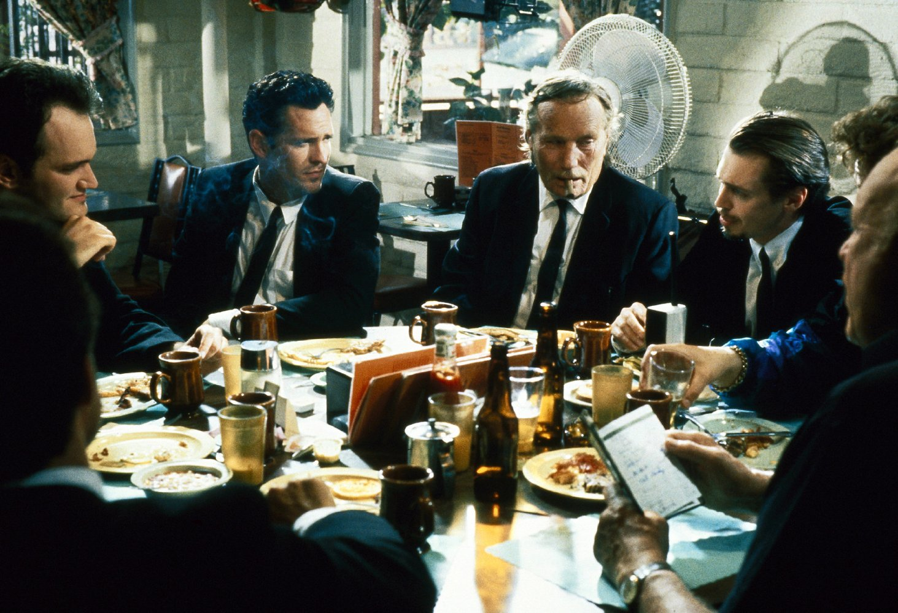

Бешеные псы
«Бешеные псы» (англ. Reservoir Dogs) — культовый дебютный фильм независимого американского режиссёра Квентина Тарантино. Сюжет картины завязан на ограблении, после которого преступники собираются в назначенном месте — в заброшенном складе на окраине города — и пытаются выяснить, кто их подставил. Впервые фильм был показан 18 января 1992 года на международном кинофестивале «Сандэнс», а в мае того же года участвовал в программе Каннского кинофестиваля. Получив множество положительных отзывов, кинолента тогда ещё малоизвестного режиссёра на удивление тепло была принята зрителями. Мировой прокат начался с сентября 1992 года. Кассовые сборы превысили первоначальный бюджет более чем в три раза ещё до премьеры в кинотеатрах США. Фильм был удостоен восьми наград на международных кинофестивалях, причём большинство номинаций получил Квентин Тарантино. Кинокритики в целом высоко оценили фильм, о чём может свидетельствовать 95-процентный рейтинг на обобщающем рецензии сайте Rotten Tomatoes и 78-процентный рейтинг на сайте Metacritic. Среди достоинств картины отмечали режиссуру Квентина Тарантино, выбранную манеру повествования, удачно подобранный актёрский состав.ой программы на Каннском кинофестивале. В 2010 году Тарантино был назначен председателем жюри основного конкурса 67-го Венецианского кинофестиваля.
Восемь мужчин сидят за столом в кафе. Это мистер Белый (Харви Кейтель), мистер Розовый (Стив Бушеми), мистер Синий (Эдди Банкер), мистер Блондин (Майкл Мэдсен), мистер Оранжевый (Тим Рот), мистер Коричневый (Квентин Тарантино), Эдди «Хороший парень» Кэбот (Крис Пенн) и большой босс Джо Кэбот (Лоуренс Тирни). Большинство уже закончили есть и ведут непринуждённую беседу о музыкальных хитах 1970-х и 1980-х годов. Когда доходит черёд до сбора чаевых, вдруг выясняется, что мистер Розовый не платит их принципиально. Всячески отстаивая свою позицию, он сдаётся лишь после слов Джо Кэбота, заплатившего за завтрак и потребовавшего, чтобы Розовый вложился наравне с остальными, после чего все поднимаются со своих мест и направляются к выходу.Покинув кафе, шестеро мужчин, одетых в одинаковые чёрные костюмы, совершают вооружённое ограбление ювелирной лавки среди бела дня. Но на месте преступления их уже поджидает полиция. Тщательно просчитанный план срывается, и грабители, потеряв в перестрелках двух своих сообщников (мистера Синего и мистера Коричневого), незамедлительно скрываются с места преступления. Кто поодиночке, кто по двое, бандиты съезжаются в условленное место сбора — на заброшенный склад, где дожидаются Джо Кэбота, чтобы получить дальнейшие указания.
Созданная в соавторстве с Крэйгом Хаманном неоконченная кинолента «День рождения моего лучшего друга» была первой режиссёрской пробой Квентина Тарантино. Несмотря на удручающий результат, полученный опыт стал ценным уроком для начинающего режиссёра. Продолжая работать в салоне видеопроката, он написал сценарии к фильмам «Настоящая любовь» и «Прирождённые убийцы», каждый из которых намеревался снять сам. Осуществить свой замысел Тарантино всё же не удалось — никто не хотел финансировать его проекты. Поэтому, как только представилась возможность, он, хотя и с неохотой, продал сценарий фильма «Настоящая любовь» Гильдии сценаристов в 1989 году за минимальную сумму — 30 000 долларов.На вырученные деньги Квентин Тарантино твёрдо решил снять свой собственный фильм. Рассчитывая на ограниченный бюджет, он написал за три недели сценарий об ограблении. Съёмки предполагалось проводить в единственной декорации с использованием 16-миллиметровой чёрно-белой плёнки, а на главные роли будущий режиссёр собирался пригласить своих друзей. Будучи заядлым киноманом и просмотрев множество фильмов об ограблениях, Тарантино непременно хотел, чтобы преступникам в его фильме удалось убежать с места преступления: «…я ненавидел, ненавидел ситуацию, когда они совершают грабёж, потом собираются уйти и только из-за какой-то маленькой случайности в дело вступает судьба и обламывает их всех». Замысел «истории об ограблении, действие которой происходит не во время ограбления, а после него», появился, по словам режиссёра, ещё за несколько лет до написания сценария. И в условиях малого бюджета эта идея легла в основу киноленты.
Вобрав в себя множество образов из кинематографа и популярной культуры, фильм «Бешеные псы», в свою очередь, породил целый ряд последователей как в плане художественных приёмов, так и в плане структуры повествования. Журналист Стив Перселл из «New York Daily News», в частности, предположил, что без «Бешеных псов» не было бы таких фильмов, как «Помни», «Подозрительные лица» или «Сука любовь». В последующем крайне успешном проекте Тарантино — «Криминальном чтиве» — режиссёрский стиль во многом продиктован приёмами, использованными в постановке «Бешеных псов», как то: нелинейное повествование, цитатность, реалистичное изображение сцен насилия, обилие диалогов, операторская работа, музыка 1960—1970-х годов. В оформлении логотипа продюсерской компании A Band Apart, основанной Квентином Тарантино и Лоуренсом Бендером в 1993 году, используется стилизованное изображение четырёх фигур в чёрных костюмах. Логотип явно повторяет аналогичный мотив в оформлении обложек и рекламных плакатов «Бешеных псов» 1992 года. В 2002 году вышел индийский ремейк «Чужой среди своих», который снят по мотивам этого фильма, фильм снимали так же как и в оригинале в США, но сам режиссёр признался, что этот фильм стал одним из самых любимых, который был снят по мотивам его работ.